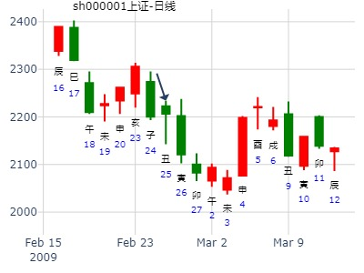
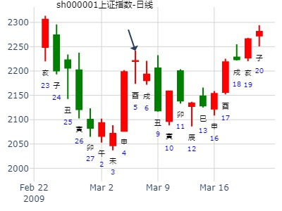
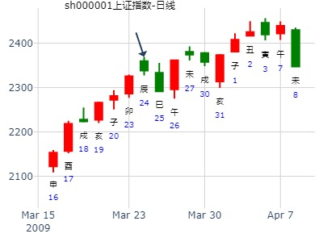
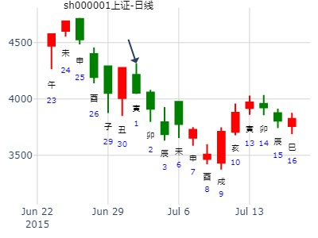
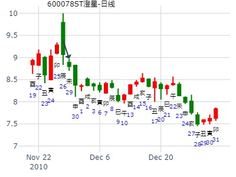

占事：2015年1月12-16日大盘走势?- wukevin-
起卦方式：手动摇卦-易经股市论坛
公历时间：2015年1月11日14时29分????
干 支：甲午年?丁丑月?丁亥日?丁未时
旬 空：辰巳 申酉 (午未) 寅卯
震宫：震为雷（六冲） 坤宫：地雷复（六合）?
六神?【本 卦】 【变 卦】
青龙 ▄▄??▄▄ 妻财庚戌土 世 ▄▄??▄▄ 官鬼癸酉金
玄武 ▄▄??▄▄ 官鬼庚申金 ▄▄??▄▄ 父母癸亥水
白虎 ▄▄▄▄▄ 子孙庚午火 O-> ▄▄??▄▄ 妻财癸丑土 应
螣蛇 ▄▄??▄▄ 妻财庚辰土 应 ▄▄??▄▄ 妻财庚辰土
勾陈 ▄▄??▄▄ 兄弟庚寅木 ▄▄??▄▄ 兄弟庚寅木
朱雀 ▄▄▄▄▄ 父母庚子水 ▄▄▄▄▄ 父母庚子水 世
动变逢冲之日都是跌。卯日为何上涨，跟卯戌合有关？
主帖标题: kk下星期如何
求测人：某人，男，庚申(1980年)，手工指定(起卦方式)
占问事宜：要问的事情..
公历：2016年1月31日14时0分，星期日。
干支：乙未年 己丑月 壬子日 丁未时 (卦身：巳)
主变卦 震为雷(震宫) 之 地雷复(坤宫) [空亡:寅、卯]
白虎 ▅▅ ▅▅ 妻财庚戌土 世 ▅▅ ▅▅ 官鬼癸酉金
螣蛇 ▅▅ ▅▅ 官鬼庚申金 ▅▅ ▅▅ 父母癸亥水
勾陈 ▅▅▅▅▅○子孙庚午火 ▅▅ ▅▅ 妻财癸丑土 应
朱雀 ▅▅ ▅▅ 妻财庚辰土 应 ▅▅ ▅▅ 妻财庚辰土
青龙 ▅▅ ▅▅ 兄弟庚寅木 ▅▅ ▅▅ 兄弟庚寅木
玄武 ▅▅▅▅▅ 父母庚子水 ▅▅▅▅▅ 父母庚子水 世
注：股票名KK不详，不配图
2006年2月10日，学生小杨来办公室看我，谈起了股市及股市预测起卦方法
当场通过指数预测一年行情。笔者问当时沪市点位为1276点，
于是用收盘点位起卦，得震之复。 庚寅月 庚午日
时间: 2006-02-10
干支: 丙戌年庚寅月庚午日 (旬空: 戌亥 )
震为雷 地雷复
腾蛇 ▅▅ ▅▅ 妻财戌土 世 ▅▅ ▅▅ 官鬼酉金
勾陈 ▅▅ ▅▅ 官鬼申金 ▅▅ ▅▅ 父母亥水
朱雀 ▅▅▅▅▅ 子孙午火 Ｏ→ ▅▅ ▅▅ 妻财丑土 应
青龙 ▅▅ ▅▅ 妻财辰土 应 ▅▅ ▅▅ 妻财辰土
玄武 ▅▅ ▅▅ 兄弟寅木 ▅▅ ▅▅ 兄弟寅木
白虎 ▅▅▅▅▅ 父母子水 ▅▅▅▅▅ 父母子水 世
此卦为震，“震”主上涨，主变动。
财爻旺而持世，但旬空。子孙发动化财生世，
寅午戌三合子孙局，股市上涨之势明显。因三合子孙局，涨幅必大。什么时候涨？
戌财旬空，辰月冲实则涨；午月子孙午火临之必高。
戌月财爻实空之月必旺，丑月因有化出之财而旺势不减。。。
故断为反转，而非反弹。2006年的行情走过来大家都清楚了，到2007年立春前一天收于2673点。比预测时翻了一番，巳不必多言
主帖标题: [原创]每日预测沪市大盘方向
震宫：震为雷（六冲） 坤宫：地雷复（六合）
六神 【本 卦】 【变 卦】
勾陈 ▅▅ ▅▅ 妻财庚戌土 世 ▅▅ ▅▅ 官鬼癸酉金
朱雀 ▅▅ ▅▅ 官鬼庚申金 ▅▅ ▅▅ 父母癸亥水
青龙 ▅▅▅▅▅ 子孙庚午火 ○→ ▅▅ ▅▅ 妻财癸丑土 应
玄武 ▅▅ ▅▅ 妻财庚辰土 应 ▅▅ ▅▅ 妻财庚辰土
白虎 ▅▅ ▅▅ 兄弟庚寅木 ▅▅ ▅▅ 兄弟庚寅木
螣蛇 ▅▅▅▅▅ 父母庚子水 ▅▅▅▅▅ 父母庚子水 世
好卦
注意，此人卦时间固定在9：30，怀疑为数理卦，勿当真。

主题：焦炭1309本周后三天的走势
癸巳 甲寅 甲子 戊辰 (日空:戌亥 时空:戌亥 四大空亡:水)
癸巳年正月十八(2013/02/27 08:49:33)
震为雷 地雷复
玄武 妻财戌土 ∥ 震 官鬼酉金 ∥
白虎 官鬼申金 ∥ 父母亥水 ∥
腾蛇 子孙午火 ○ 妻财丑土 ∥ 应
勾陈 妻财辰土 ∥ 应 妻财辰土 ∥
朱雀 兄弟寅木 ∥ 兄弟寅木 ∥
青龙 父母子水 ／ 父母子水 ／ 坤
开始涨了，逢低做多
姓名： 男 占事：螺纹2486做多赚钱吗到213
公历时间：2015年2月8日16时22分
干 支：乙未年 戊寅月 乙卯日 甲申时
旬 空：辰巳 申酉 (子丑) 午未
震宫：震为雷（六冲） 坤宫：地雷复（六合）
六神 【本 卦】 【变 卦】
玄武 ▄▄ ▄▄ 妻财庚戌土 世 ▄▄ ▄▄ 官鬼癸酉金
白虎 ▄▄ ▄▄ 官鬼庚申金 ▄▄ ▄▄ 父母癸亥水
螣蛇 ▄▄▄▄▄ 子孙庚午火 O-> ▄▄ ▄▄ 妻财癸丑土 应
勾陈 ▄▄ ▄▄ 妻财庚辰土 应 ▄▄ ▄▄ 妻财庚辰土
朱雀 ▄▄ ▄▄ 兄弟庚寅木 ▄▄ ▄▄ 兄弟庚寅木
青龙 ▄▄▄▄▄ 父母庚子水 ▄▄▄▄▄ 父母庚子水 世
主帖标题: [原创]每日预测沪市大盘方向
公历时间：2009年3月5日9时30分 星期四
干支：己丑年 丙寅月 己酉日 己巳时 (旬空：寅卯)
特别提示您：今天19时02分交惊蛰节
震为雷 地雷复
勾陈 ▅▅ ▅▅ 妻财戌土 世 ▅▅ ▅▅ 官鬼酉金
朱雀 ▅▅ ▅▅ 官鬼申金 ▅▅ ▅▅ 父母亥水
青龙 ▅▅▅▅▅ 子孙午火 Ｏ→ ▅▅ ▅▅ 妻财丑土 应
玄武 ▅▅ ▅▅ 妻财辰土 应 ▅▅ ▅▅ 妻财辰土
白虎 ▅▅ ▅▅ 兄弟寅木 ▅▅ ▅▅ 兄弟寅木
腾蛇 ▅▅▅▅▅ 父母子水 ▅▅▅▅▅ 父母子水 世

主帖标题: [原创]每日预测沪市大盘方向
公历时间：2009年3月10日9时30分 星期二
干支：己丑年 丁卯月 甲寅日 己巳时 (旬空：子丑)
干支: 己丑年丁卯月甲寅日 (旬空: 子丑 )
震为雷 地雷复
六神 伏神 本 卦 变 卦
玄武 ▅▅ ▅▅ 妻财戌土 世 ▅▅ ▅▅ 官鬼酉金
白虎 ▅▅ ▅▅ 官鬼申金 ▅▅ ▅▅ 父母亥水
腾蛇 ▅▅▅▅▅ 子孙午火 Ｏ→ ▅▅ ▅▅ 妻财丑土 应
勾陈 ▅▅ ▅▅ 妻财辰土 应 ▅▅ ▅▅ 妻财辰土
朱雀 ▅▅ ▅▅ 兄弟寅木 ▅▅ ▅▅ 兄弟寅木
青龙 ▅▅▅▅▅ 父母子水 ▅▅▅▅▅ 父母子水 世

主帖标题: [原创]每日预测沪市大盘方向
公历起卦时间：2009年3月24日9时30分 (手工指定)
干支：己丑年 丁卯月 戊辰日 丁巳时 （日空：戌亥）
神煞：驿马－寅 桃花－酉 日禄－巳 贵人－丑，未
震宫：震为雷 (六冲) 坤宫：地雷复 (六合)
六神 伏神 本 卦 变 卦
朱雀 妻财庚戌土 ▅▅ ▅▅ 世 官鬼癸酉金 ▅▅ ▅▅
青龙 官鬼庚申金 ▅▅ ▅▅ 父母癸亥水 ▅▅ ▅▅
玄武 子孙庚午火 ▅▅▅▅▅ ○→ 妻财癸丑土 ▅▅ ▅▅ 应
白虎 妻财庚辰土 ▅▅ ▅▅ 应 妻财庚辰土 ▅▅ ▅▅
腾蛇 兄弟庚寅木 ▅▅ ▅▅ 兄弟庚寅木 ▅▅ ▅▅
勾陈 父母庚子水 ▅▅▅▅▅ 父母庚子水 ▅▅▅▅▅ 世

占事：轻纺城3.18-3.27
公历起卦时间：2015年3月18日10时41分 (在线摇卦)
干支：乙未年 己卯月 癸巳日 丁巳时 （日空：午未）
震宫：震为雷 (六冲) 坤宫：地雷复 (六合)
六神 伏神 本 卦 变 卦
白虎 妻财庚戌土 ▅▅ ▅▅ 世 官鬼癸酉金 ▅▅ ▅▅
腾蛇 官鬼庚申金 ▅▅ ▅▅ 父母癸亥水 ▅▅ ▅▅
勾陈 子孙庚午火 ▅▅▅▅▅ ○→ 妻财癸丑土 ▅▅ ▅▅ 应
朱雀 妻财庚辰土 ▅▅ ▅▅ 应 妻财庚辰土 ▅▅ ▅▅
青龙 兄弟庚寅木 ▅▅ ▅▅ 兄弟庚寅木 ▅▅ ▅▅
玄武 父母庚子水 ▅▅▅▅▅ 父母庚子水 ▅▅▅▅▅ 世
主帖标题: T-Z-D-M上证指数擂台赛第九场第4局（2020年3月5日）T方
起卦公历：2020年3月4日15时26分(北京时间)
起卦农历：二○二○年 二月 十一日 申时。
干支： 庚子年 戊寅月 丙午日 丙申时 (卦身：子)未
主变卦 震为雷(震宫) 之 地雷复(坤宫) [空亡:寅、卯]
青龙 ━ ━ 妻财戌土 世 ━ ━ 官鬼酉金
玄武 ━ ━ 官鬼申金 ━ ━ 父母亥水
白虎 ━━━ ○子孙午火 ━ ━ 妻财丑土 应
螣蛇 ━ ━ 妻财辰土 应 ━ ━ 妻财辰土
勾陈 ━ ━ 兄弟寅木 ━ ━ 兄弟寅木
朱雀 ━━━ 父母子水 ━━━ 父母子水 世
◇九四:震遂泥。 象曰：震遂泥，未光也。

主题：4月18日黄金的走势 起卦时价1374.70
癸巳 丙辰 甲寅 戊辰 (日空:子丑 时空:戌亥 四大空亡:金水)
癸巳年三月初九(2013/04/18 08:20:44)
震为雷 地雷复
玄武 妻财戌土 ∥ 震 官鬼酉金 ∥
白虎 官鬼申金 ∥ 父母亥水 ∥
腾蛇 子孙午火 ○ 妻财丑土 ∥ 应
勾陈 妻财辰土 ∥ 应 妻财辰土 ∥
朱雀 兄弟寅木 ∥ 兄弟寅木 ∥
青龙 父母子水 ／ 父母子水 ／ 坤
癸巳 丙辰 甲寅 戊辰 (日空:子丑 时空:戌亥 四大空亡:金水)
癸巳年三月初九(2013/04/18 08:03:05)
地风升 地山谦
玄武 官鬼酉金 ∥ 官鬼酉金 ∥
白虎 父母亥水 ∥ 父母亥水 ∥ 兑
子孙午火：腾蛇 妻财丑土 ∥ 震 妻财丑土 ∥
勾陈 官鬼酉金 ／ 官鬼申金 ／
兄弟寅木：朱雀 父母亥水 ○ 子孙午火 ∥ 应
青龙 妻财丑土 ∥ 应 妻财辰土 ∥

注：梅花小孩的卦，常用数理卦，仅供参考。
主帖标题: 上证大盘巳月份行情走势如何？（有更新）
出生：2020 年 性别：男 占事：卦3同问，
排卦：元亨利贞网六爻在线排盘系统
公历起卦时间：2020年4月24日12时22分 (手工指定)
干支：庚子年 庚辰月 丁酉日 丙午时 （日空：辰巳）
震宫：震为雷 (六冲) 坤宫：地雷复 (六合)
青龙 妻财庚戌土 ▅▅ ▅▅ 世 官鬼癸酉金 ▅▅ ▅▅
玄武 官鬼庚申金 ▅▅ ▅▅ 父母癸亥水 ▅▅ ▅▅
白虎 子孙庚午火 ▅▅▅▅▅ ○→ 妻财癸丑土 ▅▅ ▅▅ 应
螣蛇 妻财庚辰土 ▅▅ ▅▅ 应 妻财庚辰土 ▅▅ ▅▅
勾陈 兄弟庚寅木 ▅▅ ▅▅ 兄弟庚寅木 ▅▅ ▅▅
朱雀 父母庚子水 ▅▅▅▅▅ 父母庚子水 ▅▅▅▅▅ 世
进入巳月财，旺极。月初即高点。注意回避风险！
主帖标题: 2020.05.06日上证指数擂台赛第十六场第5局 Z方（日测参赛贴)
公历起卦时间：2020年4月30日11时5分 (手工指定)
干支：庚子年 庚辰月 癸卯日 戊午时 （日空：辰巳）
神煞：驿马－巳 桃花－子 日禄－子 贵人－卯，巳
震宫：震为雷 (六冲) 坤宫：地雷复 (六合)
白虎 妻财庚戌土 ▅▅ ▅▅ 世 官鬼癸酉金 ▅▅ ▅▅
螣蛇 官鬼庚申金 ▅▅ ▅▅ 父母癸亥水 ▅▅ ▅▅
勾陈 子孙庚午火 ▅▅▅▅▅ ○→ 妻财癸丑土 ▅▅ ▅▅ 应
朱雀 妻财庚辰土 ▅▅ ▅▅ 应 妻财庚辰土 ▅▅ ▅▅
青龙 兄弟庚寅木 ▅▅ ▅▅ 兄弟庚寅木 ▅▅ ▅▅
玄武 父母庚子水 ▅▅▅▅▅ 父母庚子水 ▅▅▅▅▅ 世
主帖标题: [原创]恒生指数探讨七
起卦方式：时间起卦
公历时间：2006年5月30日14时36分 星期二
干支：丙戌年 癸巳月 己未日 辛未时 (旬空：子丑)
震宫：震为雷（六冲） 坤宫：地雷复（六合）
六神 【本 卦】 【变 卦】
勾陈 ▅▅ ▅▅ 妻财庚戌土 世 ▅▅ ▅▅ 官鬼癸酉金
朱雀 ▅▅ ▅▅ 官鬼庚申金 ▅▅ ▅▅ 父母癸亥水
青龙 ▅▅▅▅▅ 子孙庚午火 ○→ ▅▅ ▅▅ 妻财癸丑土 应
玄武 ▅▅ ▅▅ 妻财庚辰土 应 ▅▅ ▅▅ 妻财庚辰土
白虎 ▅▅ ▅▅ 兄弟庚寅木 ▅▅ ▅▅ 兄弟庚寅木
螣蛇 ▅▅▅▅▅ 父母庚子水 ▅▅▅▅▅ 父母庚子水 世

调整到6月14日见底又开涨。子丑空完合，又戌亥空，等戌亥出空。
公历时间：2006年5月30日14时
农历时间：五月初四日辛未时 小满下元当月节气：6月6日4时34分芒种 当日
干支：丙戌 癸巳 己未 辛未国际易经网 www.iqing.net线上排盘系统当日
旬空：子丑（日） 戌亥（时）阳遁八局 值符天任落二宫 值使生门落六宫┌──────┬──────┬──────┐│ 九地 │ 九天 │ 值符 ││ 死门 丙│ 惊门 庚│ 开门 戊││ 天心 癸│ 天蓬 己│ 天任 辛│├──────┼──────┼──────┤│ 玄武 │ │ 螣蛇 ││ 景门 乙│ │ 休门 壬││ 天柱 壬│ 丁│ 天冲 乙│├──────┼──────┼──────┤│ 白虎 │ 六合 │ 太阴 ││丁 杜门 辛│ 伤门 己│ 生门 癸││禽 天芮 戊│ 天英 庚│ 天辅 丙│└──────┴──────┴──────┘
虽然回升,仍旧转头下滑.
在将近三点的时候,回升到将近没有下跌的时候,转头了,物极必反,开始趋向下跌;
而三点后开始一直下跌!
这个局面值得研究.
占事：上证今日及下周各日趋势 时间: 2016-05-13
时间：2016年5月13日10点11分 星期五
干支：丙申年癸巳月乙未日辛巳时 (旬空: 辰巳 )
震为雷 地雷复
玄武 ▅▅ ▅▅ 妻财戌土 世 ▅▅ ▅▅ 官鬼酉金
白虎 ▅▅ ▅▅ 官鬼申金 ▅▅ ▅▅ 父母亥水
腾蛇 ▅▅▅▅▅ 子孙午火 Ｏ→ ▅▅ ▅▅ 妻财丑土 应
勾陈 ▅▅ ▅▅ 妻财辰土 应 ▅▅ ▅▅ 妻财辰土
朱雀 ▅▅ ▅▅ 兄弟寅木 ▅▅ ▅▅ 兄弟寅木
青龙 ▅▅▅▅▅ 父母子水 ▅▅▅▅▅ 父母子水 世
主帖标题: 2020.05.20日上证指数擂台赛第十八场第3局 Z方（日测）
数理卦
公历起卦时间：2020年5月20日8时40分 (手工指定)
干支：庚子年 辛巳月 癸亥日 丙辰时 （日空：子丑）
震宫：震为雷 (六冲) 坤宫：地雷复 (六合)
白虎 妻财庚戌土 ▅▅ ▅▅ 世 官鬼癸酉金 ▅▅ ▅▅
螣蛇 官鬼庚申金 ▅▅ ▅▅ 父母癸亥水 ▅▅ ▅▅
勾陈 子孙庚午火 ▅▅▅▅▅ ○→ 妻财癸丑土 ▅▅ ▅▅ 应
朱雀 妻财庚辰土 ▅▅ ▅▅ 应 妻财庚辰土 ▅▅ ▅▅
青龙 兄弟庚寅木 ▅▅ ▅▅ 兄弟庚寅木 ▅▅ ▅▅
玄武 父母庚子水 ▅▅▅▅▅ 父母庚子水 ▅▅▅▅▅ 世

主帖标题: 猜板
干支：壬寅年 乙巳月 癸未日 戊午时 （日空：申酉）
神煞：驿马－巳 桃花－子 日禄－子 贵人－卯，巳
震宫：震为雷 (六冲) 坤宫：地雷复 (六合)
六神 伏神 本 卦 变 卦
白虎 妻财庚戌土 ▅▅ ▅▅ 世 官鬼癸酉金 ▅▅ ▅▅
螣蛇 官鬼庚申金 ▅▅ ▅▅ 父母癸亥水 ▅▅ ▅▅
勾陈 子孙庚午火 ▅▅▅▅▅ ○→ 妻财癸丑土 ▅▅ ▅▅ 应
朱雀 妻财庚辰土 ▅▅ ▅▅ 应 妻财庚辰土 ▅▅ ▅▅
青龙 兄弟庚寅木 ▅▅ ▅▅ 兄弟庚寅木 ▅▅ ▅▅
玄武 父母庚子水 ▅▅▅▅▅ 父母庚子水 ▅▅▅▅▅ 世
还有几板？
占事：6月8日到12日上海大盘走势
公历起卦时间：2015年6月5日13时52分 (在线摇卦)
干支：乙未年 辛巳月 壬子日 丁未时 （日空：寅卯）
震宫：震为雷 (六冲) 坤宫：地雷复 (六合)
六神 伏神 本 卦 变 卦
白虎 妻财庚戌土 ▅▅ ▅▅ 世 官鬼癸酉金 ▅▅ ▅▅
腾蛇 官鬼庚申金 ▅▅ ▅▅ 父母癸亥水 ▅▅ ▅▅
勾陈 子孙庚午火 ▅▅▅▅▅ ○→ 妻财癸丑土 ▅▅ ▅▅ 应
朱雀 妻财庚辰土 ▅▅ ▅▅ 应 妻财庚辰土 ▅▅ ▅▅
青龙 兄弟庚寅木 ▅▅ ▅▅ 兄弟庚寅木 ▅▅ ▅▅
玄武 父母庚子水 ▅▅▅▅▅ 父母庚子水 ▅▅▅▅▅ 世
历史大顶附近卦。卯日算是合起戌土否。戌日开盘即是大顶。
子孙午火，怕亥子克。
主帖标题: 铜钱卦，7.2日上证指数是涨还是跌？
公历起卦时间：2015年7月1日23时6分 (在线摇卦) 农历：乙未年五月十六日子时
干支：乙未年 壬午月 己卯日 甲子时 （日空：申酉）
震宫：震为雷 (六冲) 坤宫：地雷复 (六合)
勾陈 妻财庚戌土 ▅▅ ▅▅ 世 官鬼癸酉金 ▅▅ ▅▅
朱雀 官鬼庚申金 ▅▅ ▅▅ 父母癸亥水 ▅▅ ▅▅
青龙 子孙庚午火 ▅▅▅▅▅ ○→ 妻财癸丑土 ▅▅ ▅▅ 应
玄武 妻财庚辰土 ▅▅ ▅▅ 应 妻财庚辰土 ▅▅ ▅▅
白虎 兄弟庚寅木 ▅▅ ▅▅ 兄弟庚寅木 ▅▅ ▅▅
腾蛇 父母庚子水 ▅▅▅▅▅ 父母庚子水 ▅▅▅▅▅ 世
综合分析：子化财，世应临财，大盘指数会上涨，兄弟临日，早盘可能有所震荡，午盘尾盘以收阳结束，可能会上涨40点，或者140点。
预测仅供参考，不作为买卖依据。
注意：午月卯日论克，未能合起戌土而涨。

求测人：某人，男，庚申(1980年)，自动起卦(起卦方式)
占问事宜：试测上证2019.8.23壬辰-8.30哪日顶？
公历：2019年8月24日8时54分，星期六。
干支：己亥年 壬申月 癸巳日 丙辰时 (卦身：巳)
主变卦 震为雷(震宫) 之 地雷复(坤宫) [空亡:午、未]
白虎 ▅▅ ▅▅ 妻财庚戌土 世 ▅▅ ▅▅ 官鬼癸酉金
螣蛇 ▅▅ ▅▅ 官鬼庚申金 ▅▅ ▅▅ 父母癸亥水
勾陈 ▅▅▅▅▅○子孙庚午火 ▅▅ ▅▅ 妻财癸丑土 应
朱雀 ▅▅ ▅▅ 妻财庚辰土 应 ▅▅ ▅▅ 妻财庚辰土
青龙 ▅▅ ▅▅ 兄弟庚寅木 ▅▅ ▅▅ 兄弟庚寅木
玄武 ▅▅▅▅▅ 父母庚子水 ▅▅▅▅▅ 父母庚子水 世
万东医疗600055最近二周涨跌？ 2022-08-10 12时46分
文一科技到国庆？ 2022-08-10 14时12分
时间: 2022-08-10
干支: 壬寅年戊申月乙未日 (旬空: 辰巳 )
震为雷 地雷复
玄武 ▅▅ ▅▅ 妻财戌土 世 ▅▅ ▅▅ 官鬼酉金
白虎 ▅▅ ▅▅ 官鬼申金 ▅▅ ▅▅ 父母亥水
腾蛇 ▅▅▅▅▅ 子孙午火 Ｏ→ ▅▅ ▅▅ 妻财丑土 应
勾陈 ▅▅ ▅▅ 妻财辰土 应 ▅▅ ▅▅ 妻财辰土
朱雀 ▅▅ ▅▅ 兄弟寅木 ▅▅ ▅▅ 兄弟寅木
青龙 ▅▅▅▅▅ 父母子水 ▅▅▅▅▅ 父母子水 世
申日虽然克兄弟，但是同时还泄财，跌。
赛象科技未来几个月。-震之复。
时间: 2022-08-13 11时35分
干支: 壬寅年戊申月戊戌日 (旬空: 辰巳 )
震为雷 地雷复
六神 伏神 本 卦 变 卦
朱雀 ▅▅ ▅▅ 妻财戌土 世 ▅▅ ▅▅ 官鬼酉金
青龙 ▅▅ ▅▅ 官鬼申金 ▅▅ ▅▅ 父母亥水
玄武 ▅▅▅▅▅ 子孙午火 Ｏ→ ▅▅ ▅▅ 妻财丑土 应
白虎 ▅▅ ▅▅ 妻财辰土 应 ▅▅ ▅▅ 妻财辰土
腾蛇 ▅▅ ▅▅ 兄弟寅木 ▅▅ ▅▅ 兄弟寅木
勾陈 ▅▅▅▅▅ 父母子水 ▅▅▅▅▅ 父母子水 世
8月15日子日跌停。马后炮：辰空。
主帖标题: [原创]每日预测深沪两市大盘指数
以下是引用求知为乐在2007-9-17 15:26:00的发言：
起卦方式：手工指定 www.iqing.net 线上排盘系统
公历时间：2007年9月18日9时30分 星期二
干支：丁亥年 己酉月 乙卯日 辛巳时 (旬空：子丑)
震宫：震为雷（六冲） 坤宫：地雷复（六合）
六神 【本 卦】 【变 卦】
玄武 ▅▅ ▅▅ 妻财庚戌土 世 ▅▅ ▅▅ 官鬼癸酉金
白虎 ▅▅ ▅▅ 官鬼庚申金 ▅▅ ▅▅ 父母癸亥水
螣蛇 ▅▅▅▅▅ 子孙庚午火 ○→ ▅▅ ▅▅ 妻财癸丑土 应
勾陈 ▅▅ ▅▅ 妻财庚辰土 应 ▅▅ ▅▅ 妻财庚辰土
朱雀 ▅▅ ▅▅ 兄弟庚寅木 ▅▅ ▅▅ 兄弟庚寅木
青龙 ▅▅▅▅▅ 父母庚子水 ▅▅▅▅▅ 父母庚子水 世
断:上海大盘,收阳为主震荡横盘的特点；卦的信息不错！

主帖标题: 29日大盘趋势
时间: 2009-09-28
干支: 己丑年癸酉月丙子日 (旬空: 申酉 )
震为雷(震宫) 之 地雷复(坤宫) [空亡:申、酉]
青龙 ━ ━ 妻财庚戌土 世 ━ ━ 官鬼癸酉金
玄武 ━ ━ 官鬼庚申金 ━ ━ 父母癸亥水
白虎 ━━━○子孙庚午火 ━ ━ 妻财癸丑土 应
螣蛇 ━ ━ 妻财庚辰土 应 ━ ━ 妻财庚辰土
勾陈 ━ ━ 兄弟庚寅木 ━ ━ 兄弟庚寅木
朱雀 ━━━ 父母庚子水 ━━━ 父母庚子水 世
大跌的卦
主帖标题: 2014年股票实战.总卦贴
占问事宜：002224三力士买进可获大利否？
公历：2014年9月4日18时3分，星期四。
干支：甲午年 壬申月 戊寅日 辛酉时 (卦身：巳)
主变卦 震为雷(震宫) 之 地雷复(坤宫) [空亡:申、酉]
朱雀 ▅▅ ▅▅ 妻财庚戌土 世 ▅▅ ▅▅ 官鬼癸酉金
青龙 ▅▅ ▅▅ 官鬼庚申金 ▅▅ ▅▅ 父母癸亥水
玄武 ▅▅▅▅▅○子孙庚午火 ▅▅ ▅▅ 妻财癸丑土 应
白虎 ▅▅ ▅▅ 妻财庚辰土 应 ▅▅ ▅▅ 妻财庚辰土
螣蛇 ▅▅ ▅▅ 兄弟庚寅木 ▅▅ ▅▅ 兄弟庚寅木
勾陈 ▅▅▅▅▅ 父母庚子水 ▅▅▅▅▅ 父母庚子水 世
不好解释，为何定性大涨？
主帖标题: [原创]每日预测沪市大盘方向
公历时间：2008年10月14日9时30分 星期二
农历时间：戊子年九月十六巳时
干支：戊子年 壬戌月 丁亥日 乙巳时 (旬空：午未)
神煞：驿马—巳 桃花—子 日禄—午 贵人—酉，亥
震宫：震为雷（六冲） 坤宫：地雷复（六合）
六神 【本 卦】 【变 卦】
青龙 ▅▅ ▅▅ 妻财庚戌土 世 ▅▅ ▅▅ 官鬼癸酉金
玄武 ▅▅ ▅▅ 官鬼庚申金 ▅▅ ▅▅ 父母癸亥水
白虎 ▅▅▅▅▅ 子孙庚午火 ○→ ▅▅ ▅▅ 妻财癸丑土 应
螣蛇 ▅▅ ▅▅ 妻财庚辰土 应 ▅▅ ▅▅ 妻财庚辰土
勾陈 ▅▅ ▅▅ 兄弟庚寅木 ▅▅ ▅▅ 兄弟庚寅木
朱雀 ▅▅▅▅▅ 父母庚子水 ▅▅▅▅▅ 父母庚子水 世
东方财富到下周五-金玉堂
时间: 2024-10-16
干支: 甲辰年甲戌月癸丑日 (旬空: 寅卯 )
震为雷 地雷复
六神 伏神 本 卦 变 卦
白虎 ▅▅ ▅▅ 妻财戌土 世 ▅▅ ▅▅ 官鬼酉金
腾蛇 ▅▅ ▅▅ 官鬼申金 ▅▅ ▅▅ 父母亥水
勾陈 ▅▅▅▅▅ 子孙午火 Ｏ→ ▅▅ ▅▅ 妻财丑土 应
朱雀 ▅▅ ▅▅ 妻财辰土 应 ▅▅ ▅▅ 妻财辰土
青龙 ▅▅ ▅▅ 兄弟寅木 ▅▅ ▅▅ 兄弟寅木
玄武 ▅▅▅▅▅ 父母子水 ▅▅▅▅▅ 父母子水 世
九四：震遂泥。此卦卯日又暴涨，跟合起世爻有关。
主帖标题: [原创]每日预测深沪两市大盘指数
公历时间：2007年11月7日9时30分 星期三
干支：丁亥年 庚戌月 乙巳日 辛巳时 (旬空：寅卯)
震宫：震为雷（六冲） 坤宫：地雷复（六合）
玄武 ▅▅ ▅▅ 妻财庚戌土 世 ▅▅ ▅▅ 官鬼癸酉金
白虎 ▅▅ ▅▅ 官鬼庚申金 ▅▅ ▅▅ 父母癸亥水
螣蛇 ▅▅▅▅▅ 子孙庚午火 ○→ ▅▅ ▅▅ 妻财癸丑土 应
勾陈 ▅▅ ▅▅ 妻财庚辰土 应 ▅▅ ▅▅ 妻财庚辰土
朱雀 ▅▅ ▅▅ 兄弟庚寅木 ▅▅ ▅▅ 兄弟庚寅木
青龙 ▅▅▅▅▅ 父母庚子水 ▅▅▅▅▅ 父母庚子水 世
主帖标题: 600078澄星股份后势
获悉：减持公司本总额的4.17%. 本次股份减持后,澄江投资不再持有公司股份.
特摇此卦，请各位探讨。
公历起卦时间：2010年11月29日21时4分 (在线摇卦)
干支：庚寅年 丁亥月 癸未日 癸亥时 （日空：申酉）
震宫：震为雷 (六冲) 坤宫：地雷复 (六合)
六神 伏神 本 卦 变 卦
白虎 妻财庚戌土 ▅▅ ▅▅ 世 官鬼癸酉金 ▅▅ ▅▅
腾蛇 官鬼庚申金 ▅▅ ▅▅ 父母癸亥水 ▅▅ ▅▅
勾陈 子孙庚午火 ▅▅▅▅▅ ○→ 妻财癸丑土 ▅▅ ▅▅ 应
朱雀 妻财庚辰土 ▅▅ ▅▅ 应 妻财庚辰土 ▅▅ ▅▅
青龙 兄弟庚寅木 ▅▅ ▅▅ 兄弟庚寅木 ▅▅ ▅▅
玄武 父母庚子水 ▅▅▅▅▅ 父母庚子水 ▅▅▅▅▅ 世

主帖标题: 000748亥月涨跌
2012-11-13 壬辰年 辛亥月 戊寅日 旬空（申酉空）
震宫：震为雷 (六冲) 坤宫：地雷复 (六合)
六神 伏神 本 卦 变 卦
朱雀 妻财庚戌土 ▅▅ ▅▅ 世 官鬼癸酉金 ▅▅ ▅▅
青龙 官鬼庚申金 ▅▅ ▅▅ 父母癸亥水 ▅▅ ▅▅
玄武 子孙庚午火 ▅▅▅▅▅ ○→ 妻财癸丑土 ▅▅ ▅▅ 应
白虎 妻财庚辰土 ▅▅ ▅▅ 应 妻财庚辰土 ▅▅ ▅▅
腾蛇 兄弟庚寅木 ▅▅ ▅▅ 兄弟庚寅木 ▅▅ ▅▅
勾陈 父母庚子水 ▅▅▅▅▅ 父母庚子水 ▅▅▅▅▅ 世

占事：002151今日走势
起卦方式：手工指定
公历时间：2013年11月20日8时50分
干 支：癸巳年 癸亥月 庚寅日 庚辰时
旬 空：午未 子丑 (午未) 申酉
震宫：震为雷（六冲） 坤宫：地雷复（六合）
六神 【本 卦】 【变 卦】
螣蛇 ▄▄ ▄▄ 妻财庚戌土 世 ▄▄ ▄▄ 官鬼癸酉金
勾陈 ▄▄ ▄▄ 官鬼庚申金 ▄▄ ▄▄ 父母癸亥水
朱雀 ▄▄▄▄▄ 子孙庚午火 O-> ▄▄ ▄▄ 妻财癸丑土 应
青龙 ▄▄ ▄▄ 妻财庚辰土 应 ▄▄ ▄▄ 妻财庚辰土
玄武 ▄▄ ▄▄ 兄弟庚寅木 ▄▄ ▄▄ 兄弟庚寅木
白虎 ▄▄▄▄▄ 父母庚子水 ▄▄▄▄▄ 父母庚子水 世
九四：震遂泥。
象曰：震遂泥，未光也。
2021年第51周 12月13至12月17日个股300491预测
公历时间：2021年12月10日15时9分
干 支：辛丑年 庚子月 壬辰日 戊申时
旬 空：辰巳 辰巳 午未 寅卯
震宫：震为雷（六冲） 坤宫：地雷复（六合）
六神 【本 卦】 【变 卦】
白虎 ▄▄ ▄▄ 妻财庚戌土 世 ▄▄ ▄▄ 官鬼癸酉金
螣蛇 ▄▄ ▄▄ 官鬼庚申金 ▄▄ ▄▄ 父母癸亥水
勾陈 ▄▄▄▄▄ 子孙庚午火 ○ ▄▄ ▄▄ 妻财癸丑土 应
朱雀 ▄▄ ▄▄ 妻财庚辰土 应 ▄▄ ▄▄ 妻财庚辰土
青龙 ▄▄ ▄▄ 兄弟庚寅木 ▄▄ ▄▄ 兄弟庚寅木
玄武 ▄▄▄▄▄ 父母庚子水 ▄▄▄▄▄ 父母庚子水 世